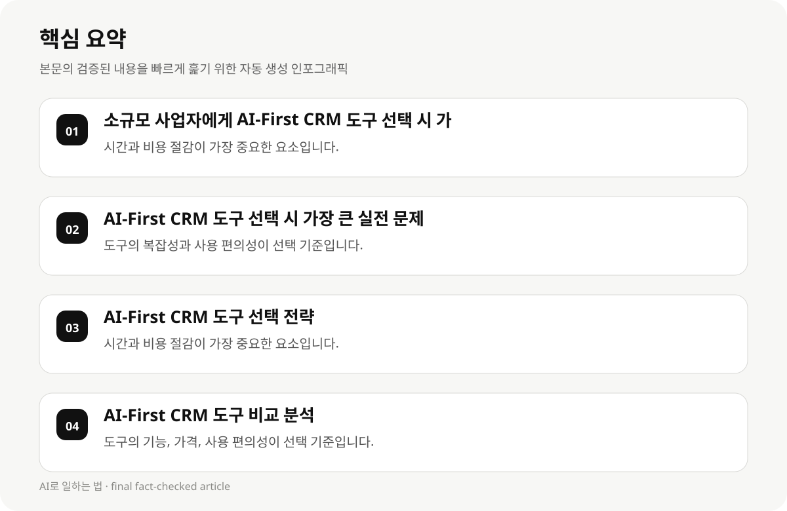

소규모 사업자에게 AI-First CRM 도구 선택 시 가장 중요한 요소 #
소규모 사업자가 AI-First CRM 도구를 선택할 때 가장 중요한 요소는 시간과 비용 절감입니다. 수동 데이터 입력과 관리가 흔한 소규모 사업자들은 AI 기능을 통해 자동화를 도모하는 도구를 선택해야 합니다.
또한 간단한 사용 편의성와 실질적인 기능이 중요합니다. 복잡한 설정이나 고급 기능이 필요하지 않은 소규모 사업자에게는 기능이 간단하고 사용이 편리한 도구가 유리합니다.
AI-First CRM 도구는 데이터 수집과 관리의 자동화를 제공하며, 소규모 사업자들이 데이터를 수동으로 입력하는 문제를 해결합니다. 이는 업무 효율성과 비용 절감에 큰 도움이 됩니다.
- 시간과 비용 절감이 가장 중요한 요소입니다.
- 간단한 사용 편의성과 실질적인 기능이 선택 기준입니다.
- 데이터 수집과 관리의 자동화가 도구의 핵심 기능입니다.
AI-First CRM 도구 선택 시 가장 큰 실전 문제 #
소규모 사업자들이 AI-First CRM 도구를 선택할 때 가장 큰 실전 문제는 도구의 복잡성과 사용 편의성입니다. 복잡한 설정이나 고급 기능이 필요하지 않은 소규모 사업자에게는 기능이 간단하고 사용이 편리한 도구가 유리합니다.
또한 도구의 가격과 사용 편의성이 선택 기준이 되는 경우가 많습니다. 소규모 사업자들은 예산 제약이 있는 경우, 가격이 저렴한 도구를 선택해야 합니다.
AI-First CRM 도구는 데이터 수집과 관리의 자동화를 제공하며, 소규모 사업자들이 데이터를 수동으로 입력하는 문제를 해결합니다. 이는 업무 효율성과 비용 절감에 큰 도움이 됩니다.
- 도구의 복잡성과 사용 편의성이 선택 기준입니다.
- 도구의 가격이 선택 기준이 되는 경우가 많습니다.
- 데이터 수집과 관리의 자동화가 도구의 핵심 기능입니다.
AI-First CRM 도구 선택 전략 #
소규모 사업자들이 AI-First CRM 도구를 선택할 때, 먼저 시간과 비용 절감을 고려해야 합니다. 수동 데이터 입력이 흔한 소규모 사업자들은 AI 기능을 통해 자동화를 도모하는 도구를 선택해야 합니다.
다음으로 간단한 사용 편의성과 실질적인 기능이 중요합니다. 복잡한 설정이나 고급 기능이 필요하지 않은 소규모 사업자에게는 기능이 간단하고 사용이 편리한 도구가 유리합니다.
AI-First CRM 도구는 데이터 수집과 관리의 자동화를 제공하며, 소규모 사업자들이 데이터를 수동으로 입력하는 문제를 해결합니다. 이는 업무 효율성과 비용 절감에 큰 도움이 됩니다.
- 시간과 비용 절감이 가장 중요한 요소입니다.
- 간단한 사용 편의성과 실질적인 기능이 선택 기준입니다.
- 데이터 수집과 관리의 자동화가 도구의 핵심 기능입니다.

AI-First CRM 도구 비교 분석 #
소규모 사업자들이 AI-First CRM 도구를 선택할 때, 도구의 기능, 가격, 사용 편의성이 가장 중요한 요소입니다. 각 도구의 특징을 비교하여 소규모 사업자들이 가장 유리한 선택을 하기 위해 고려해야 합니다.
Coffee는 AI-First CRM 도구 중 가장 독자적인 자동화 기능을 제공하며, 소규모 사업자들이 데이터를 수동으로 입력하는 문제를 해결합니다.
Vedain CRM는 AI 기능을 구독하는 데 있어 경제적인 선택을 제공하며, 소규모 사업자들이 예산 제약이 있는 경우 유리합니다.
- 도구의 기능, 가격, 사용 편의성이 선택 기준입니다.
- Coffee는 독자적인 자동화 기능을 제공하며, 소규모 사업자들이 데이터를 수동으로 입력하는 문제를 해결합니다.
- Vedain CRM는 AI 기능을 구독하는 데 있어 경제적인 선택을 제공합니다.
AI-First CRM 도구 선택 시의 실전 문제 해결 전략 #
소규모 사업자들이 AI-First CRM 도구를 선택할 때, 도구의 사용 편의성과 실질적인 기능이 가장 중요한 요소입니다. 사용 편의성은 도구의 간단한 설정과 직관적인 사용을 제공하며, 실질적인 기능은 데이터 수집과 관리의 자동화를 도모합니다.
AI-First CRM 도구는 데이터 수집과 관리의 자동화를 제공하며, 소규모 사업자들이 데이터를 수동으로 입력하는 문제를 해결합니다. 이는 업무 효율성과 비용 절감에 큰 도움이 됩니다.
소규모 사업자들이 AI-First CRM 도구를 선택할 때, 도구의 가격과 사용 편의성이 선택 기준이 되는 경우가 많습니다. 예산 제약이 있는 소규모 사업자들은 가격이 저렴한 도구를 선택해야 합니다.
- 도구의 사용 편의성과 실질적인 기능이 선택 기준입니다.
- 데이터 수집과 관리의 자동화가 도구의 핵심 기능입니다.
- 소규모 사업자들은 가격이 저렴한 도구를 선택해야 합니다.
AI-First CRM 도구 선택 시의 실전 문제 해결 #
소규모 사업자들이 AI-First CRM 도구를 선택할 때, 도구의 사용 편의성과 실질적인 기능이 가장 중요한 요소입니다. 사용 편의성은 도구의 간단한 설정과 직관적인 사용을 제공하며, 실질적인 기능은 데이터 수집과 관리의 자동화를 도모합니다.
AI-First CRM 도구는 데이터 수집과 관리의 자동화를 제공하며, 소규모 사업자들이 데이터를 수동으로 입력하는 문제를 해결합니다. 이는 업무 효율성과 비용 절감에 큰 도움이 됩니다.
소규모 사업자들이 AI-First CRM 도구를 선택할 때, 도구의 가격과 사용 편의성이 선택 기준이 되는 경우가 많습니다. 예산 제약이 있는 소규모 사업자들은 가격이 저렴한 도구를 선택해야 합니다.
- 도구의 사용 편의성과 실질적인 기능이 선택 기준입니다.
- 데이터 수집과 관리의 자동화가 도구의 핵심 기능입니다.
- 소규모 사업자들은 가격이 저렴한 도구를 선택해야 합니다.
AI-First CRM 도구 선택 시의 실전 문제 해결 #
소규모 사업자들이 AI-First CRM 도구를 선택할 때, 도구의 사용 편의성과 실질적인 기능이 가장 중요한 요소입니다. 사용 편의성은 도구의 간단한 설정과 직관적인 사용을 제공하며, 실질적인 기능은 데이터 수집과 관리의 자동화를 도모합니다.
AI-First CRM 도구는 데이터 수집과 관리의 자동화를 제공하며, 소규모 사업자들이 데이터를 수동으로 입력하는 문제를 해결합니다. 이는 업무 효율성과 비용 절감에 큰 도움이 됩니다.
소규모 사업자들이 AI-First CRM 도구를 선택할 때, 도구의 가격과 사용 편의성이 선택 기준이 되는 경우가 많습니다. 예산 제약이 있는 소규모 사업자들은 가격이 저렴한 도구를 선택해야 합니다.
- 도구의 사용 편의성과 실질적인 기능이 선택 기준입니다.
- 데이터 수집과 관리의 자동화가 도구의 핵심 기능입니다.
- 소규모 사업자들은 가격이 저렴한 도구를 선택해야 합니다.